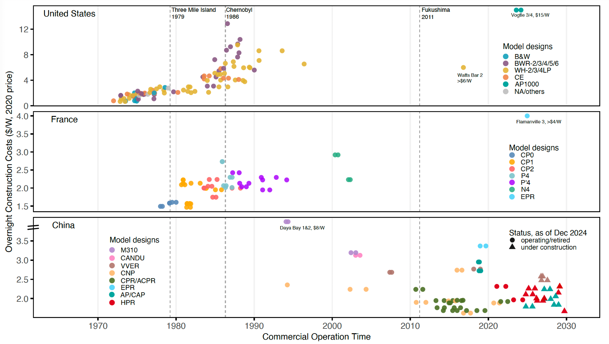
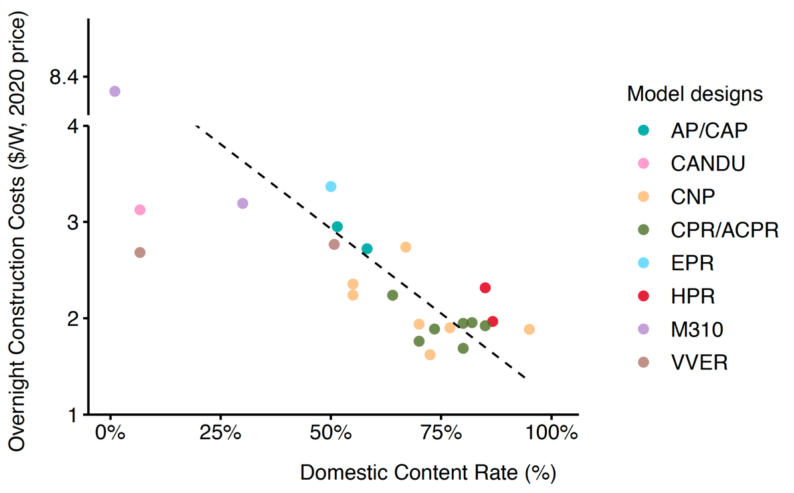

Can China break the ‘cost curse’ of nuclear power?
Nature
Title: China reins in the spiralling construction costs of nuclear power — what can other countries learn?
Strengthening regulations and domestic supply chains could be key to making nuclear power more economically viable.

Can China break the ‘cost curse’ of nuclear power?
Shangwei Liu*, Gang He*, Minghao Qiu, and Daniel M. Kammen
Nature (2025)
DOI: 10.1038/d41586-025-02341-z
Summary
Escalating construction expenses threaten to derail global progress on atomic energy. China offers lessons on how to rein in costs. Over the past two decades, China has been the main country to substantially and consistently expand its nuclear fleet. Here we compiled and analyzed a dataset on the construction costs of nuclear power plants in China. We find that the construction costs of Chinese nuclear power plants have been declining since 2000, and the cost of building a nuclear power plant has been halved. China’s deliberate, staged effort to build domestic supply chains and standardized reactor designs has been key to this success. Coordinated regulatory structures and long-term policy commitments have also been important. As countries rush to expand nuclear capacities, they must combine affordability with safety, scalability, investor confidence and public trust. Without this, nuclear power will remain an expensive bet the world can ill afford.


Links
Published paper
SharedIt full-text
Preprint pdf
Press release
Supplementary information pdf
Source data
- Power plant level investment costs (overnight construction costs)
- Power plant indigenization rate (domestic content rate)
- Harmonized nuclear power plant costs across countries (U.S., France, China)
Nature Portfolio summary in Chinese
Noteable policy citations:
Employ America. 2026. After the Aging Coal Fleet: Ramping Advanced Firm Power.
American Enterprise Institute. 2026. Can America Build Nuclear Again?.
KUDOS. 2026. NOU 2026: 4 - Nuclear power in Norway?.
Nature press release
Comment: China Offers Clues to Break Nuclear Power’s ‘Cost Curse’
While historically the nuclear industry has faced a ‘cost escalation curse’, as witnessed in the U.S. and France, China has halved and stabilized these expenses over the past two decades, according to a Comment piece published in Nature this week.
Shangwei Liu, Gang He, Minghao Qiu, and Daniel Kammen compiled and analysed a data set on the construction costs of nuclear power plants in China drawn from a wide range of publicly available sources. They attribute this success to a strategic blend of stable regulations, domestic supply chain development, and standardized reactor designs. China’s centralized nuclear regulatory structure, long-term policy commitments, and rapid project execution have enabled it to build reactors in nearly half the time of recent Western counterparts. These findings have important implications for policymakers seeking a nuclear energy resurgence, “As countries rush to expand nuclear capacities, they must combine affordability with safety, scalability, investor confidence and public trust. Without this, nuclear power will remain an expensive bet the world can ill afford”, they conclude.
The Economist and The New York Times reproduced our chart
References
Footnotes
Clarification regarding Flamanville 3 cost estimates: At the time of our data collection, Flamanville 3 was still under construction, with published overnight cost estimates ranging from $4.013/W to $8.62/W (see Rothwell 2022, Table 2). In our original figure (now included as Supplementary Figure S1), we used the lower bound estimate of $4/W and denoted it as “> $4/W” to reflect the uncertainty and acknowledge that this conservative value already illustrates the magnitude of cost escalation in France’s recent nuclear construction. Subsequently, the 2025 French Court of Auditors’ review placed the overnight construction cost at over $10/W. We note that the “>” symbol was inadvertently omitted from the final published figure, and we apologize for this oversight.↩︎
Citation
@article{liu2025,
author = {Liu, Shangwei and He, Gang and Qiu, Minghao and M. Kammen,
Daniel},
title = {Can {China} Break the “Cost Curse” of Nuclear Power?},
journal = {Nature},
volume = {643},
pages = {1186-1188},
date = {2025-07-31},
url = {https://www.nature.com/articles/d41586-025-02341-z},
doi = {10.1038/d41586-025-02341-z},
langid = {en}
}